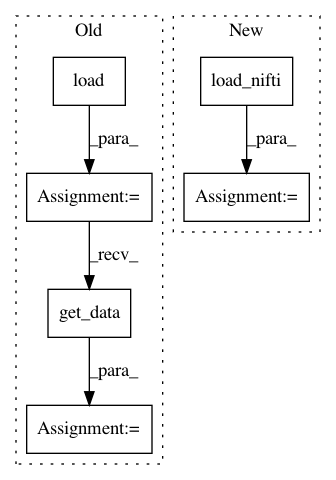

c117a3f9b888196936a2e3ef2b78a619b169d60e,dipy/workflows/denoise.py,NLMeansFlow,run,#NLMeansFlow#Any#Any#Any#Any#,18
Before Change
logging.warning("Denoising skipped for now.")
else:
logging.info("Denoising {0}".format(fpath))
image = nib.load(fpath)
data = image.get_data()
if sigma == 0:
logging.info("Estimating sigma")
sigma = estimate_sigma(data)
After Change
logging.warning("Denoising skipped for now.")
else:
logging.info("Denoising {0}".format(fpath))
data, affine, image = load_nifti(fpath, return_img=True)
if sigma == 0:
logging.info("Estimating sigma")
sigma = estimate_sigma(data)
In pattern: SUPERPATTERN
Frequency: 3
Non-data size: 6
Instances
Project Name: nipy/dipy
Commit Name: c117a3f9b888196936a2e3ef2b78a619b169d60e
Time: 2018-12-10
Author: skab12@gmail.com
File Name: dipy/workflows/denoise.py
Class Name: NLMeansFlow
Method Name: run
Project Name: nipy/dipy
Commit Name: 06a3d0890b11544375040024326f69f252e30601
Time: 2016-08-29
Author: matthieu.dumont@usherbrooke.ca
File Name: dipy/workflows/segment.py
Class Name: MedianOtsuFlow
Method Name: run
Project Name: nipy/dipy
Commit Name: 61e34a1140510f6fe251011e97066e5974bc90f3
Time: 2020-01-03
Author: skab12@gmail.com
File Name: doc/examples/viz_slice.py
Class Name:
Method Name: